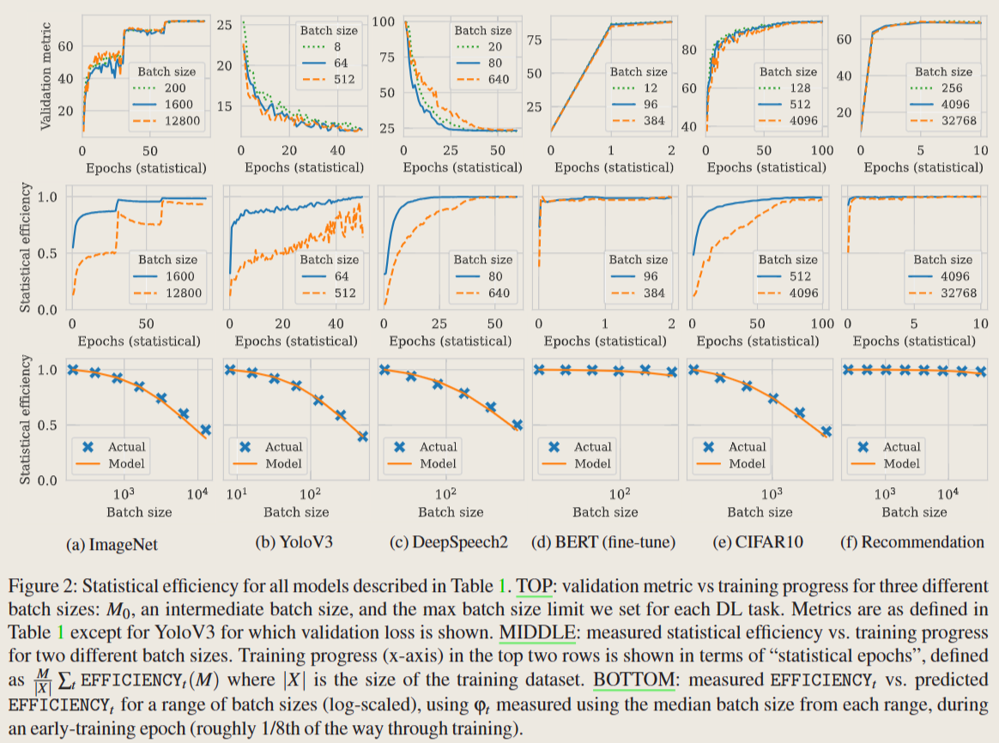
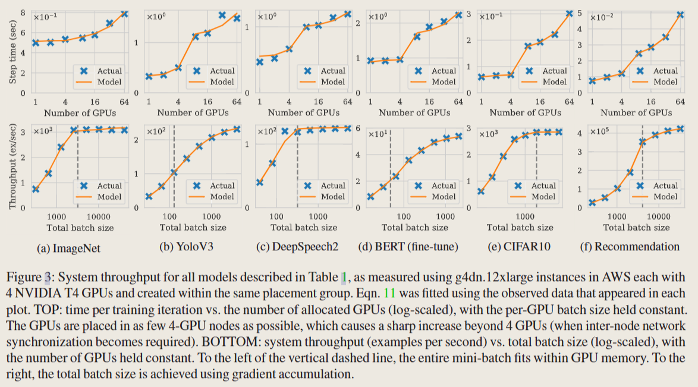
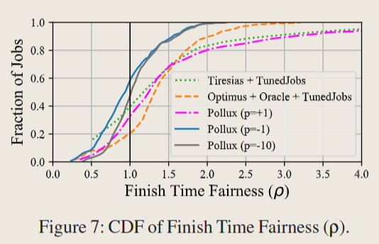
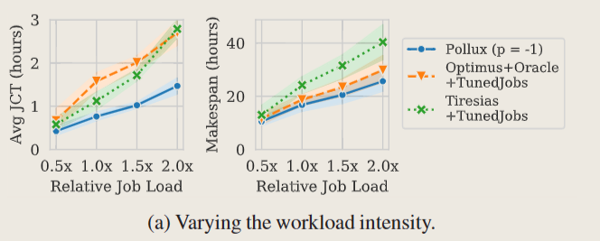
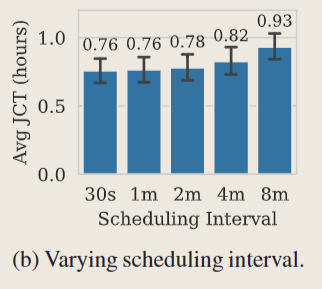
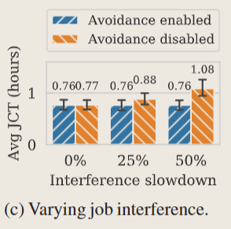

pollux
Pollux
背景
1. 系统吞吐量
即每个单位时间处理的训练实例的数量，
- 影响因素：
- 分配给job的资源分配和分布
- 分布执行和同步的方法（数据并行）
- batchsize
- 与
- 不变，因此要提高，即提高batchsize
2. 统计效率
即每个处理的训练实例所取得的进展量。
- 影响因素：
- batchsize：较大的batchsize通常会降低统计效率
- learning rate
Gradient noise scale:
- 衡量随机梯度的噪声信号比，值越大batch size与learning rate就算设置的较大也不容易降低统计效率
- 噪声高（如接近收敛时），增加batchsize会更有用
Learning rate scaling:
- batchsize增加时，learning rate也要增加
- 较大batchsize不止会降低统计效率，也可能在验证性能方面降低最终模型质量
统计效率是每处理一单位数据所取得的训练进度，当统计效率下降时，训练所需要的epoch数量会增加。最佳的训练效果需要在系统吞吐量和统计效率之间权衡。
为什么要协调（batch size、learning rate、gpu nums）：
为了提高系统吞吐量 → 提高 gpu nums → 提高 batch size → 统计效率会下降（需要重新调整learning rate）
3. 已有调度器
- non-sscale-adaptive：由用户指定job的GPU数，如Tiresias、Gandiva。（其实应不应该改变用户要求的GPU数，这是一个问题）
- Gandiva能动态改变job的GPU数，但其没有基于作业可扩展性的知识（opportunistically）
- scale-adaptive：基于资源在加速job方面的有用性来动态决定资源数量分配，如Optimus（只动态分配GPU）、SLAQ、Gavel、AntMan、Themis
- Crucially, existing schedulers are agnostic to the statistical efficiency of DL training and the inter-dependence of resource decisions and training parameters
Goodput
本文定义了 goodput：在第 t 个 iteration 的 goodput 为系统吞吐量和统计效率的乘积。
其中，是 allocation vector，是从节点 n 分配的 GPU 数量，m 是 batch size，s 为梯度累积步骤数。
总的 batch size： → /home/jxlai/project/adaptdl/simulator/simulator.py:117
goodput可以理解为对训练进度有用的吞吐量部分
:star:Pollux’s approach：
- initial batch size and learning rate 由用户提交job时指定
- Pollux使用单一GPU启动作业， ()
- job运行时，Pollux profile，学习和细化系统吞吐量和统计效率预测模型
- 使用上述预测模型，根据集群范围的资源可用性和性能，Pollux 定期为每个作业重新调整 (a,m,s)
Plug-in Learning Rate Scaling:
- 是用于衡量学习率的指标
- SCALE_LR能利用训练过程中收集到的指标如GNS
- 使用这种接口，可以实现多种学习率scale规则
1 统计效率建模
为了支持自适应SGD的各种变种，我们采用 pre-conditioned gradient noise scale：
不同batchsize要取得相同的训练进展需要次训练迭代，即每次迭代取得的进展为
一个DL任务在使用 batch size 时的统计效率是相对于用 来说，每用 个训练样本所获得的训练进度。统计效率可以被计算为：
这个式子不是应该再乘以吗?
在训练过程中，Pollux 估计了 的值，然后使用 上述式子 来预测不同批次大小下的 。 的测量值随着迭代 t 的训练进度而变化，因此 反映了真实统计效率所表现出的寿命依赖性趋势。

- TOP中，曲线间的相似程度意味着统计效率的准确性
- MIDDLE中，表明不同 batch szie 有不同的统计效率
- BOTTOM中，表明使用批量大小 M 测量的 φt 可以被 Pollux 用于预测不同批量大小 M’ 下 EFFICIENTYt 的值，而无需提前使用 M’ 进行训练
Upper batch size limit:
- 为什么要有batch size上限：学习率规则可能失效。
- 实际上，batch size 放大32倍在大多数情况下也能很好工作；而且可以加入新的学习率规则到 Plug-in 中
Estimating :
- 当gpu且没有梯度累积时，uses consecutive gradient estimates ˆg(t−1) and ˆg(t).
2 系统吞吐量建模
-
-
对于，
-
先不考虑梯度累积（s）：
- 极端情况1： 与 没有重叠，那么 ，即
- 极端情况2： 与 完全重叠，那么 ，即
- 综上，该式子可以通过调整 正确表示
-
考虑梯度累积（s）：
- 在第（s+1）次跨所有gpu同步之前，每个gpu梯度进行s次局部聚合，从而实现更大的总批处理大小
-
-
- 局部梯度估计是使用反向传播计算的，其运行时间与每个 gpu 的 batchsize m 呈线性关系
-
- K为GPU数，N为物理节点数
- 由于使用三个或更多GPU会有性能倒退（stragglers或网络延迟），因此加了一个倒退的参数

- Limits of the throughput model：
- 我们在建模throughput时只考虑了GPU数量和位置、batchsize、梯度累积步数s；但实际上情况可能会更复杂
- 解决方法：将Goodput模块化，改变throughput分成时无需修改核心功能代码
Pollux架构与设计
Pollux 以两种不同的粒度调整 DL 作业执行。
- job-level: Pollux动态调整 batchsize 和 lr 以达到对分配资源的最高利用率
- cluster-wide: 基于所有作业的 Goodput 动态分配资源（兼顾公平性和作业完成时间）
-
PolluxAgent：
- 拟合job的统计效率和吞吐量方程
- 对每个任务所给定的GPU资源分配结果，调整 batchsize 和 lr 以提高资源利用率
- 周期性向 PolluxSched报告job对应的 goodput function
-
PolluxSched
- 兼顾每个job的goodput和资源争用，在集群范围内周期性优化资源分配
- 同时考虑了资源重分配的开销、多作业间网络干扰导致的减速、资源公平性
3.1 PolluxAgent
系统吞吐量的表示：
GOODPUT的表示：
-
每次收集的信息：，a为资源分配情况，m为每个GPU的batchsize，s为累积梯度步骤数
-
周期性 将参数 拟合到迄今为止收集的所有吞吐量数据，将,发送给 PolluxSched
Specifically, we minimize the root mean squared logarithmic error (RMSLE) between Eqn. 11 and the collected data triples, using L-BFGS-B.
- 非负
Prior-driven exploration:
- 每个作业从一个 GPU 开始，最初被假定为完美地扩展到更多的 GPU
- 最多使用1个GPU时：
- 最多使用1个节点时：(？ )
- 最多使用2个GPU时：
- PolluxSched is then encouraged to allocate more GPUs and/or nodes to the job, naturally as part of its resource optimization (§4.2), until the PolluxAgent can estimate θsys more accurately
- 能分配的GPU最大数为job的生命周期中被分配GPU数的两倍（？）
Training job tuning:
-
知道之后，即可指定job的GOODPUT，进而得到以下式子，决定batchsize和s，以最大化利用当前分到的资源，同时调整 learning rate 以适应新的batchsize
3.2 PolluxSched
The PolluxSched periodically allocates (and re-allocates) resources for every job in the cluster.
-
maximizes a fitness function
- J 为任务总数
- A 是表示节点给任务分配的GPU数的矩阵， 表示节点n给任务j分配的GPU数
- 表示任务j，由当前资源进行迭代得到的goodput，与用平均资源进行迭代得到的goodput之比，来表示加速
- p用于调整公平性
- 当 时，PolluxSched会为能取得更高SPEEDUP的任务分配更多gpu
- 当 时，平稳地接近加速值的最小值，在这种情况下，最大化促进了训练作业之间的平等加速，但忽略了整体的集群质量和资源效率。
- 实验中取效果较好
-
重新分配资源的惩罚
重新分配资源需要消耗时间，因此对于需要重新分配资源的任务，需要有一个惩罚
-
-
为任务的age（指的应该是持续时间）、 为任务重新分配资源的次数、 为重新分配资源的评估时延
-
之前经历过较多次重新分配资源的任务，会有较大的惩罚
-
-
干扰问题
多任务共享一个节点时，它们在同步梯度和模型参数时的网络使用可能会相互干扰，导致多个任务都减慢
PolluxSched mitigates this issue by disallowing different distributed jobs (each using GPUs across multiple nodes) from sharing the same node. ensuring at most one distributed job is allocated to each node
- 这个可以通过代码来看（5.3.2），貌似是通过指定一个干扰常数
-
对于非自适应的任务
- 用户可能想通过指定的batchsize运行，如，PolluxSched 可将 设为1，然后只根据系统吞吐量来动态调整
PolluxAgent 和 PolluxSched 都需要一个子程序，在给定固定 a 的情况下优化 GOODPUTt (a, m, s)。我们通过首先对总批量大小 M 的一系列候选值进行采样来实现此过程，然后找到最小的 s，使得 m = ⌈M/s⌉ 根据用户定义的上限适合 GPU 内存，最后采用导致最高 GOODPUT 值的配置
Evaluation
1. Experimental Setup
Manually-tuned jobs for baseline DL schedulers：
- 对于表中的模型，采取一些列GPU allocations 和 batch sizes，采用一系列不同的 batch sizes 进行训练。当使用最优的batch size 能达到单GPU（也是最优batchsize）线性扩展性能的50%-80%时，即认为有效
Comparison of DL schedulers:
- Pollux. We configured PolluxSched to use a 60s scheduling interval, and compute REALLOC_FACTOR(δ) using δ = 30s. PolluxAgent reports its most up-to-date system throughput parameters and gradient statistics every 30s. Unless otherwise specified, the default fairness knob value of p = −1 is used
3 Simulator Experiments
Simulator construction
- simulate the throughput for a job
- a multi-dimensional linear interpolation on the configurations we measured
- simulate the statistical efficiency
- linearly interpolated its value of the PGNS between the two nearest batch sizes
- simulate the overhead of checkpoint-restarts
- 30-second delay for each job that has its resources re-allocated.
Scheduling Fairness
-
P=1最佳

Sensitivity to job load
-
job增加，三个调度器的JCT均上升，但Pollux仍是最优的

Impact of prior-driven exploration
- low overhead from Pollux’s prior-driven exploration.（JCT变化不大）
Impact of scheduling interval
- 
Impact of interference avoidance

code
1 | |